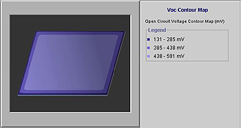
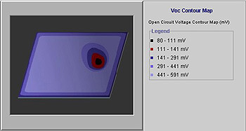

Voc Contour Mapping
This test is only useful following the firing of the aluminium rear metal contact or else at the completion of processing if the front surface metal contact is removed. This is a particularly useful test to identify localised shunting regions that may result from contamination such as small amounts of aluminium paste being accidentally transferred to the front surface of the wafer.
This test is simply performed by placing the wafer on a temperature controlled metal block beneath a light source. If the diffusion oxide or other layer remains on the wafer surface, this will probably have to be removed prior to this test. A multimeter can then be used to probe the voltage (open circuit voltage) formed between the metal block and the other probe which is used to contact various points on the wafer surface. Without a front metal contact, the lateral resistance is relatively high, therefore allowing localised shunted regions to be easily identified. Localised shunting causes the open circuit voltage in that immediate vicinity to be dragged to a low value. Adjacent regions feed current laterally through the diffused emitter into this shunted region. This provides a lateral voltage change (Voc contour). A typical measurement scenario would involve probing the Voc roughly every centimetre or so across the entire wafer surface. By following the Voc contours in the direction of the lower values, it becomes possible to pinpoint the location where the shunting is occurring. The Voc at this point may fall by hundreds of millivolts. As the Voc value is probed in the adjacent regions, the Voc will then increase as the distance away from the shunted point increases. The gradient of these contours gives an indication of the severity of the shunting although the main benefit of this test is that it identifies the presence of a shunting problem and its location that in turn gives insight into the cause of the problem. Examples of typical contours are shown below.

Figure: Example of a Voc contour map
If this test is performed prior to edge junction isolation (through plasma etching), some shunting around the edges of the wafer is normal as shown above. The Voc contour test will therefore indicate a reducing Voc value in close proximity to the edges. Without additional shunting, however, the Voc value for all the central regions of the wafer should remain relatively uniform and at a value similar to what the final device Voc should be after the completion of processing. The contour mapping below is typical of a wafer with a localised shunting problem resulting from aluminium paste contaminating a small region of the wafer surface.

Figure: Localised shunting detected in the black region
The test can still be performed without a temperature-controlled block although allowance will have to be made for the fact that the Voc at any point will fall approximately 2.2mV for every degree increase in temperature. The cell may heat up during the test therefore necessitating repeated readings and some adjustment of values. However, the presence of the Voc contours should still be able to be easily identified.